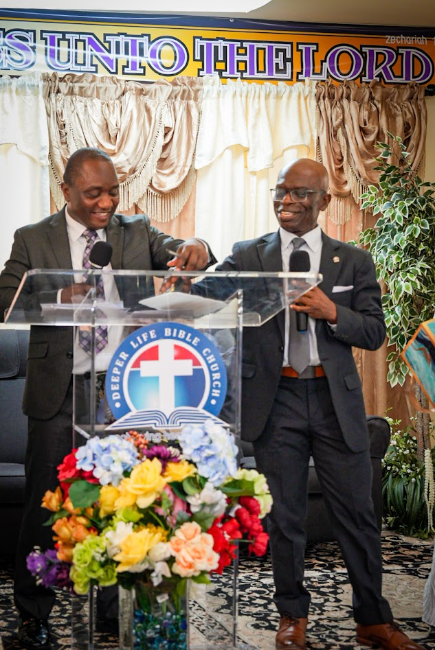

Our Mission
To spread the message of salvation to all nations, fulfilling the Great Commission.
Deeper Life Bible Church is a global, Bible-based holiness church that started in 1973 at Lagos, Nigeria with 15 people, under the leadership of its founder and General Superintendent, Pastor Dr. William F. Kumuyi. Our commitment is to the systematic and expository teaching of God's word, and to nurturing believers into holy, purposeful living.
Our mission is to spread the message of salvation to all nations, fulfilling the Great Commission. We envision a community of believers established in the faith, living holy lives, and prepared for the coming of Christ.



To spread the message of salvation to all nations, fulfilling the Great Commission.
A community of believers established in the faith, living holy lives, and prepared for the coming of Christ.
The systematic and expository teaching of God's word, nurturing believers into holy, purposeful living.
Core truths from Scripture that shape everything we teach and practice.
Books of the Bible, our final word
Father, Son & Holy Ghost, one God
Entire sanctification, a further work of grace
We watch and wait for Christ's return
Eternal separation from God for the unrepentant
Our eternal home with Christ forever
Empowerment for holy living and service
Public testimony of a believer's new life
A time of unprecedented trial before Christ's reign
Christ's thousand-year reign of peace on earth
Final judgment before God's throne
Christ conceived by the Holy Ghost, born of a virgin
All mankind fallen and in need of grace
A genuine turning away from sin toward God
Making things right, the fruit of true repentance
Forgiven and counted righteous through faith in Christ's blood
Communion in remembrance of Christ's sacrifice
Wholeness of spirit, soul, and body through Christ
One-on-one, God-ordained ministry to reach the lost
God's sacred covenant between one man and one woman
All will rise: some to life, some to judgment
God will replace this fallen creation with a new one
The eternal holy city prepared for God's people